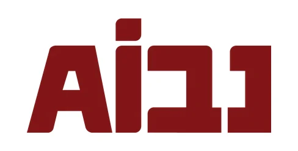

וואטסאפ ביזנס
פועלהודעות וקבצים שנכנסים מגיעים לתיק. מענה אוטומטי נפתח רק אחרי סקר פרטיות, והלקוח יודע שהוא מקבל הודעה אוטומטית.
שותף הטמעה רשמי של נבו

למשרדי עורכי דין
ב-LegalFlow מחברים את Claude למה שכבר רץ במשרד: וואטסאפ, המייל, עודכנית, ליגל, קומיט, נט המשפט ונבו. Claude קורא, ממיין ומכין טיוטה. עורך הדין מאשר כל צעד.
שיחת היכרות של 20 דקות · בלי התחייבות
משרדים ומוסדות שעובדים איתנו
לא מחליפים מערכת. מחברים את מה שיש. ליד כל חיבור כתוב מה הוא נותן ובאיזה שלב הוא נמצא.
הודעות וקבצים שנכנסים מגיעים לתיק. מענה אוטומטי נפתח רק אחרי סקר פרטיות, והלקוח יודע שהוא מקבל הודעה אוטומטית.
קריאה, מיון, תיוק וטיוטות. בלי שליחה אוטומטית. המסמכים נשארים במקום שהמשרד אישר.
טיוטות בלבד
מייל, יומן, Word ו-Excel. אותם כללים: קריאה, מיון וטיוטות.
טיוטות בלבד
מערכות ניהול המשרד. כמעט כל מערכת שהמשרד מתחבר אליה בעצמו אפשר לחבר. כשאין ממשק, יש דרכי ביניים: ייצוא מתוזמן ותיקייה משותפת.
לפי הממשק של כל מערכת
החלטות, פרוטוקולים וכתבי טענות נקלטים לתיק. החלטה חדשה הופכת למועד ביומן ולטיוטת עדכון ללקוח.
חיבור מקומי
הפסיקה, בטקסט המלא של פסק הדין. ציטוט נחשב מאומת רק אחרי שנמצא בטקסט המלא.
חיבור למערכת המייצגים.
קריאה ותיוק, בהרשאות שנקבעו מראש.
[רז: מה החיבור נותן]
כל מערכת אחרת של המשרד נבדקת בשיחה.
כל דוגמה כאן בנתוני דמה. בכל אחת כתוב מה Claude עושה, ואיפה עורך הדין מכריע.
מה קורה
כל התיקים של המשרד במסך אחד: מה דחוף היום, דיונים, מועדים, ומה מחכה להחלטה. הלוח מתעדכן לבד כשמסמך חדש נכנס.
איפה עורך הדין מכריע
הוא רואה מה מחכה לו, וממשיך לעבוד מכל משימה בלחיצה.
מה קורה
מסמך מגיע בוואטסאפ או במייל. המערכת קוראת אותו, מתייקת ומתייגת אותו, משייכת אותו לתיק ובודקת אותו מול המשימה הפתוחה.
איפה עורך הדין מכריע
בקשת אישור נשלחת אליו בהודעה פרטית, לא בקבוצה עם הלקוח. משימה נסגרת רק אחרי אישור. כל שליפה מתועדת.
מה קורה
החלטה שנקלטה הופכת למועד ביומן ולטיוטת עדכון ללקוח.
איפה עורך הדין מכריע
הוא בודק את המועד ואת הטיוטה לפני שהם יוצאים.
מה קורה
חיפוש במקטעי פסיקה, ואחר כך בטקסט המלא של פסק הדין.
איפה עורך הדין מכריע
שאלה משפטית יוצאת לנבו רק אחרי שהוא אישר אותה, ובנוסח נקי מפרטים מזהים של הלקוח.
מה קורה
קריאה, מיון, תיוק וטיוטות, בלי הרשאת שליחה. שליחה אוטומטית חסומה.
איפה עורך הדין מכריע
הוא שולח בעצמו.
מה קורה
שואלים מה המצב בתיק, מבקשים לרשום שעות או לעדכן תיק לפי סיכום פגישה. Claude עונה מתוך עודכנית ומכין את הרישום.
איפה עורך הדין מכריע
כל רישום נכנס רק אחרי "כן". שום דבר לא נמחק. לסרטון ההדגמה
החשש מוכר: חומר של לקוח שהועלה לצ'אט, ואף אחד לא יודע לאן. ככה זה עובד אצלנו.
המערכת מכינה טיוטה ומציעה. רישום בתיק, משימה שנסגרת או מכתב יוצאים רק אחרי אישור של עורך הדין.
מייל, הודעה ללקוח ומכתב יוצאים כשעורך הדין שולח אותם. מענה אוטומטי בוואטסאפ נפתח רק אחרי סקר פרטיות.
כל חיבור מקבל רק את מה שהמשרד אישר: אילו תיקיות, אילו תיבות, קריאה או כתיבה.
כל שליפה וכל רישום נשמרים: מה נעשה, מתי, ומי אישר.
מכירים את המשרד, את המערכות שלו ואת מה שחוזר על עצמו כל יום.
בוחרים תהליך אחד, וכותבים איך הוא עובד היום ואיך הוא יעבוד עם Claude.
מחברים את המערכת הראשונה, ובודקים אותה על העבודה האמיתית של המשרד.
כשהחיבור הראשון עובד, מוסיפים את הבא.
כל חלק נמסר כשהוא מוכן.
נכון לאוקטובר 2026.
מייסד LegalFlow
מטמיע AI מוסמך בארגונים, משפטן וחוקר Legal AI באוניברסיטת בר אילן. מנהל את הקהילה המקצועית ״בינה מלאכותית במשפט הישראלי״, שקבוצותיה מונות יותר מ-4,000 עורכי דין. מלווה עורכי דין ומשרדים בבניית מערכות עבודה מבוססות AI שמותאמות לשיטה שלהם.
מוביל אוטומציות ומערכות
ב-LegalFlow הוא מוביל את האוטומציות מקצה לקצה: אפיון, ארכיטקטורה, בנייה וחיבור המערכות של המשרד. בין המערכות שהוא מחבר: M365, וואטסאפ ביזנס, Claude Teams, מערכות ניהול משרד כמו עודכנית וליגל, ומאגרי מידע ממשלתיים.
רז ברכה אחראי על הצד המשפטי והסקילים, ואיליה על הבנייה בתוך המשרד.
רוצים להתחיל לבד? למדריך ההתקנה של הקונקטור של נבו
לא. Claude מתחבר למערכת שכבר יש לכם, עודכנית, ליגל או קומיט, ועובד מעליה.
החיבור עובד עם וואטסאפ ביזנס. בשיחה בודקים איזה מספר מחברים ואיך מפרידים בין אישי למשרדי. מענה אוטומטי ללקוח נפתח רק אחרי סקר פרטיות.
עורך הדין. Claude מכין טיוטה, ורישום, משימה או מכתב יוצאים רק אחרי האישור שלו.
המסמכים נשארים במקום שהמשרד אישר: הדרייב, התיקיות או מערכת ניהול המשרד. Claude ניגש אליהם לפי ההרשאות שנקבעו, וכל גישה מתועדת.
תלוי בתהליך ובמערכות. אחרי שיחת האפיון יודעים מה החיבור הראשון ומתי הוא נמסר. כל חלק נמסר כשהוא מוכן.
המחיר נקבע בשיחה, לפי התהליכים והמערכות של המשרד.
בודקים אותה בשיחה. כשאין ממשק, יש דרכי ביניים: ייצוא מתוזמן או תיקייה משותפת.
ספרו לנו בקצרה על המשרד. מיד אחרי השליחה בוחרים מועד לשיחת היכרות של 20 דקות ב-Google Meet.
עכשיו בוחרים מועד לשיחה של 20 דקות ב-Google Meet.
היומן לא נטען? לבחירת מועד בחלון חדש